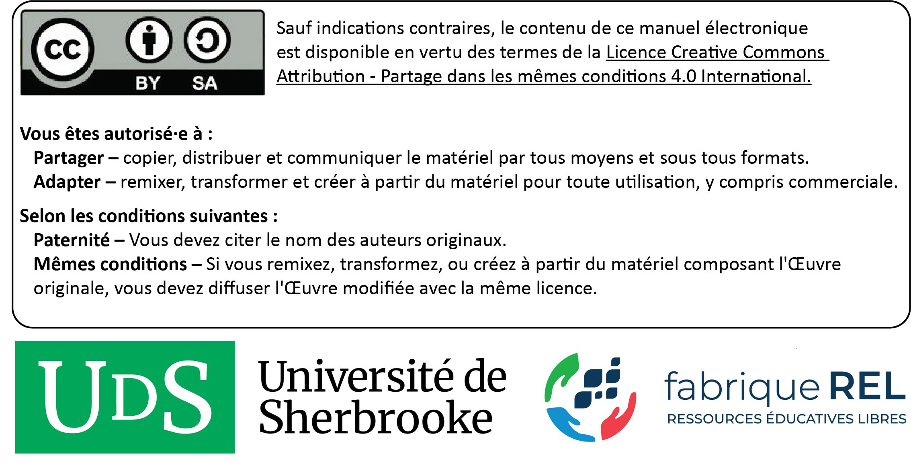

# Liste des packages
ListePackages <- c("actuar", "AER", "apaTables", "boot", "car", "caret", "chorddiag", "classInt",
"cluster", "clusterCrit", "correlation", "corrplot", "DescTools", "DHARMa",
"dplyr", "effectsize", "ellipse", "FactoMineR", "fastDummies", "fitdistrplus",
"fmsb", "foreign", "gamlss", "gamlss.add", "gamlss.dist", "geocmeans", "gganimate",
"ggeffects", "ggplot2", "ggpubr", "ggpubr", "ggpubr", "ggpubr", "ggspatial",
"ggthemes", "gmodels", "grid", "gridExtra", "Hmisc", "itsadug", "kableExtra",
"LaplacesDemon", "lme4", "lmtest", "lubridate", "MASS", "merTools", "metR",
"mgcv", "moments", "MuMIn", "NbClust", "nortest", "pdftools", "performance",
"ppcor", "proxy", "qqplotr", "QuantPsyc", "QuantPsyc", "QuantPsyc",
"RColorBrewer", "reshape2", "ROCR", "rstatix", "sandwich", "sas7bdat", "segmented",
"sf", "SimDesign", "sjstats", "snow", "splines2", "stargazer", "stats", "stringr",
"textrank", "tmap", "tmap", "treemap", "udpipe", "vcd", "VGAM", "VGAM", "viridis",
"Weighted.Desc.Stat", "wordcloud2", "xlsx")
# Packages non installés dans la liste
PackagesNonInstalles <- ListePackages[!(ListePackages %in% installed.packages()[,"Package"])]
# Installation des packages manquants
if(length(new.packages)) install.packages(PackagesNonInstalles)Méthodes quantitatives en sciences sociales : un grand bol d’R
Résumé : Ce livre vise à décrire une panoplie de méthodes quantitatives utilisées en sciences sociales avec le logiciel ouvert R. Il a d’ailleurs été écrit intégralement dans R avec Quarto. Le contenu est pensé pour être accessible à tous et toutes, même à ceux et celles n’ayant presque aucune base en statistique ou en programmation. Les personnes plus expérimentées y découvriront des sections sur des méthodes plus avancées comme les modèles à effets mixtes, les modèles multiniveaux, les modèles généralisés additifs ainsi que les méthodes factorielles et de classification. Ceux et celles souhaitant migrer progressivement d’un autre logiciel statistique vers R trouveront dans cet ouvrage les éléments pour une transition en douceur. La philosophie de ce livre est de donner toutes les clefs de compréhension et de mise en œuvre des méthodes abordées dans R. La présentation des méthodes est basée sur une approche compréhensive et intuitive plutôt que mathématique, sans pour autant que la rigueur statistique soit négligée.
Remerciements : Ce manuel a été réalisé avec le soutien de la fabriqueREL. Fondée en 2019, la fabriqueREL est portée par divers établissements d’enseignement supérieur du Québec et agit en collaboration avec les services de soutien pédagogique et les bibliothèques. Son but est de faire des ressources éducatives libres (REL) le matériel privilégié en enseignement supérieur au Québec.
Maquette de la page couverture et identité graphique du livre : Andrés Henao Florez.
Mise en page : Philippe Apparicio et Marie-Hélène Gadbois Del Carpio.
Révision linguistique : Denise Latreille.
© Philippe Apparicio et Jérémy Gelb.
Pour citer cet ouvrage : Apparicio P. et J. Gelb (2024). Méthodes quantitatives en sciences sociales : un grand bol d’R. Université de Sherbrooke, Département de géomatique appliquée. fabriqueREL. Licence CC BY-SA.

Préface
Ce livre vise à décrire une panoplie de méthodes quantitatives utilisées en sciences sociales avec le logiciel ouvert R. Il a d’ailleurs été écrit intégralement dans R avec Quatro. Le contenu est pensé pour être accessible à tous et toutes, même à ceux et celles n’ayant presque aucune base en statistique ou en programmation. Les personnes plus expérimentées y découvriront des sections sur des méthodes plus avancées comme les modèles à effets mixtes, les modèles multiniveaux, les modèles généralisés additifs ainsi que les méthodes factorielles et de classification. Ceux et celles souhaitant migrer progressivement d’un autre logiciel statistique vers R trouveront dans cet ouvrage les éléments pour une transition en douceur. La philosophie de ce livre est de donner toutes les clefs de compréhension et de mise en œuvre des méthodes abordées dans R. La présentation des méthodes est basée sur une approche compréhensive et intuitive plutôt que mathématique, sans pour autant que la rigueur statistique ne soit négligée. Servez-vous votre boisson chaude ou froide favorite et installez-vous dans votre meilleur fauteuil. Bonne lecture!
Un manuel sous la forme d’une ressource éducative libre
Pourquoi un manuel sous licence libre?
Les logiciels libres sont aujourd’hui très répandus. Comparativement aux logiciels propriétaires, l’accès au code source permet à quiconque de l’utiliser, de le modifier, de le dupliquer et de le partager. Le logiciel R, dans lequel sont mises en œuvre les méthodes quantitatives décrites décrites dans ce livre, est d’ailleurs à la fois un langage de programmation et un logiciel libre (sous la licence publique générale GNU GPL2). Par analogie aux logiciels libres, il existe aussi des ressources éducatives libres (REL) « dont la licence accorde les permissions désignées par les 5R (Retenir — Réutiliser — Réviser — Remixer — Redistribuer) et donc permet nécessairement la modification » (fabriqueREL). La licence de ce livre, CC BY-SA (figure 1), permet donc de :
Retenir, c’est-à-dire télécharger et imprimer gratuitement le livre. Notez qu’il aurait été plutôt surprenant d’écrire un livre payant sur un logiciel libre et donc gratuit. Aussi, nous aurions été très embarrassés que des personnes étudiantes avec des ressources financières limitées doivent payer pour avoir accès au livre, sans pour autant savoir préalablement si le contenu est réellement adapté à leurs besoins.
Réutiliser, c’est-à-dire utiliser la totalité ou une section du livre sans limitation et sans compensation financière. Cela permet ainsi à d’autres personnes enseignantes de l’utiliser dans le cadre d’activités pédagogiques.
Réviser, c’est-à-dire modifier, adapter et traduire le contenu en fonction d’un besoin pédagogique précis puisqu’aucun manuel n’est parfait, tant s’en faut! Le livre a d’ailleurs été écrit intégralement dans R avec Quatro. Quiconque peut ainsi télécharger gratuitement le code source du livre sur github et le modifier à sa guise (voir l’encadré intitulé Suggestions d’adaptation du manuel).
Remixer, c’est-à-dire « combiner la ressource avec d’autres ressources dont la licence le permet aussi pour créer une nouvelle ressource intégrée » (fabriqueREL).
Redistribuer, c’est-à-dire distribuer, en totalité ou en partie, le manuel ou une version révisée sur d’autres canaux que le site Web du livre (par exemple, sur le site Moodle de votre université ou en faire une version imprimée).
La licence de ce livre, CC BY-SA (figure 1), oblige donc à :
Attribuer la paternité de l’auteur dans vos versions dérivées, ainsi qu’une mention concernant les grandes modifications apportées, en utilisant la formulation suivante : Apparicio Philippe et Jérémy Gelb (2024). Méthodes quantitatives en sciences sociales : un grand bol d’R. Université de Sherbrooke. fabriqueREL. Licence CC BY-SA.
Utiliser la même licence ou une licence similaire à toutes versions dérivées.

Suggestions d’adaptation du manuel
Pour chaque méthode d’analyse spatiale abordée dans le livre, une description détaillée et une mise en œuvre dans R sont disponibles. Par conséquent, plusieurs adaptations du manuel sont possibles :
Conserver uniquement les chapitres sur les méthodes ciblées dans votre cours.
En faire une version imprimée et la distribuer aux personnes étudiantes.
Modifier la description d’une ou de plusieurs méthodes en effectuant les mises à jour directement dans les chapitres.
Insérer ses propres jeux de données dans les sections intitulées Mise en œuvre dans R.
Modifier les tableaux et figures.
Ajouter une série d’exercices.
Modifier les quiz de révision.
Rédiger un nouveau chapitre.
Modifier des syntaxes R. Plusieurs packages R peuvent être utilisés pour mettre en œuvre telle ou telle méthode. Ces derniers évoluent aussi très vite et de nouveaux packages sont proposés fréquemment. Par conséquent, il peut être judicieux de modifier une syntaxe R du livre en fonction de ses habitudes de programmation dans R (utilisation d’autres packages que ceux utilisés dans le manuel par exemple) ou de bien mettre à jour une syntaxe à la suite de la parution d’un nouveau package plus performant ou intéressant.
Toute autre adaptation qui permet de répondre au mieux à un besoin pédagogique.
Un manuel conçu comme un projet collaboratif
Il existe actuellement de nombreux livres sous licence ouverte écrits avec rmarkdown ou Quarto, répertoriés sur les sites de https://bookdown.org/ et de https://quarto.org/docs/gallery/#books. Sans surprise, R étant un logiciel libre dédié aux méthodes statistiques et à la science des données, plusieurs abordent les méthodes quantitatives, notamment :
Beyond Multiple Linear Regression: Applied Generalized Linear Models and Multilevel Models in R (Roback et Legler 2021), CC BY-NC-SA.
Introduction to Econometrics with R (Hanck et al. 2019), CC BY-NC-SA.
Statistical Inference via Data Science: A ModernDive into R and the Tidyverse (Ismay et Kim 2019), CC BY-NC-SA.
R Graphics Cookbook, 2nd edition (Chang 2018), CC BY.
Par contre, la grande majorité de ces livres numériques rédigés avec R sont en anglais. À notre connaissance, ce projet constitue le premier manuel numérique en français sur les méthodes quantitatives appliquées aux sciences sociales réalisé avec Quatro. La première version du livre étant lancée, il est grand temps de planifier les suivantes! Pour ce faire, nous considérons ce livre comme un projet collaboratif visant à mobiliser la communauté universitaire francophone qui enseigne les statistiques en sciences sociales avec R. Plusieurs raisons motivent cette vision collaborative :
Rien n’est parfait! Cette première version comprend sûrement des coquilles et certaines sections mériteraient d’être améliorées. Les commentaires et suggestions visant à améliorer son contenu sont les bienvenus.
La table des matières doit être impérativement extensible! De nombreuses méthodes statistiques très utilisées en sciences sociales ne sont pas abordées dans ce livre et mériteraient d’être ajoutées dans une version ultérieure : certaines extensions des régressions linéaires (régressions Rigge et Lasso, Tobit, quantile, etc.), les modèles d’équations simultanées, les analyses de données longitudinales (entre autres, modèles de survie, régression par panel), les modèles d’équations structurelles et bien d’autres! Par conséquent, si vous êtes intéressé(e)s, à ajouter un nouveau chapitre ou une partie du livre, nous vous invitons vivement à communiquer avec nous ou à diffuser sous une licence similaire votre version dérivée. L’objectif étant de continuer à faire tourner la roue du libre et, idéalement, que les futures versions soient corédigées par une communauté d’auteurs et d’autrices spécialistes en méthodes quantitatives.
Comment lire ce livre?
Le livre comprend plusieurs types de blocs de texte qui en facilitent la lecture.
Bloc packages
Habituellement localisé au début d’un chapitre, il comprend la liste des packages R utilisés pour un chapitre.
Bloc objectif
Il comprend une description des objectifs d’un chapitre ou d’une section.
Bloc notes
Il comprend une information secondaire sur une notion, une idée abordée dans une section.
Bloc pour aller plus loin
Il comprend des références ou des extensions d’une méthode abordée dans une section.
Bloc astuce
Il décrit un élément qui vous facilitera la vie : une propriété statistique, un package, une fonction, une syntaxe R.
Bloc attention
Il comprend une notion ou un élément important à bien maîtriser.
Bloc exercice
Il comprend un court exercice de révision à la fin de chaque chapitre.
Comment utiliser les données du livre pour reproduire les exemples?
Ce livre comprend des exemples détaillés et appliqués dans R pour chacune des méthodes abordées. Ces exemples se basent sur des jeux de données structurés et mis à disposition avec le livre. Ils sont disponibles sur le repo github dans le sous-dossier data, à l’adresse https://github.com/SerieBoldR/MethodesQuantitatives/tree/main/data.
Une autre option est de télécharger le repo complet du livre directement sur github (https://github.com/SerieBoldR/MethodesQuantitatives) en cliquant sur le bouton Code, puis le bouton Download ZIP (figure 2). Les données se trouvent alors dans le sous-dossier nommé data.
Liste des packages utilisés
Pour écrire ce livre, nous avons utilisé de nombreux packages que vous pouvez installer avec le code ci-dessous.
Structure du livre
Le livre est organisé autour de cinq grandes parties.
Partie 1. La découverte de R. Dans cette première partie, nous discutons brièvement de l’histoire et de la philosophie de R. Nous voyons ensuite comment installer R et RStudio. Les bases du langage R (particulièrement les principaux objets que sont le vecteur, la matrice, la liste et le dataframe) ainsi que la manipulation des données avec R sont aussi largement abordés dans le chapitre 1.
Partie 2. Analyses univariées et représentations graphiques. Cette seconde partie comprend deux chapitres. Dans le chapitre 2, nous décrivons dans un premier temps les différents types de données (primaires versus secondaires, transversales versus longitudinales, spatiales versus aspatiales, individuelles versus agrégées), les différents types de variables quantitatives (discrètes et continues) et qualitatives (nominales et ordinales) et les principales distributions de variables utilisées en sciences sociales (uniforme, Bernoulli, binomiale, géométrique, binomiale négative, poisson, poisson avec excès de zéros, gaussienne, gaussienne asymétrique, log-normale, Student, Cauchy, Chi-carré, exponentielle, Gamma, bêta, Weibull et Pareto). Dans un second temps, nous abordons les statistiques descriptives pour des variables quantitatives (paramètres de tendance centrale, paramètres de position, paramètres de dispersion, paramètres de forme), puis qualitatives (fréquences absolues, relatives et cumulées).
Dans le chapitre 3, nous illustrons les incroyables capacités graphiques de R en mettant en œuvre les principaux graphiques (histogramme, graphique de densité, nuage de points, graphique en lignes, boîtes à moustache, graphique en violon, graphique en barre, graphique circulaire), quelques graphiques particuliers (graphique en radar, diagramme d’accord, nuage de mots, carte proportionnelle) et une initiation aux cartes choroplèthes.
Partie 3. Analyses bivariées. Cette troisième partie comprend trois chapitres dans lesquelles sont présentées les principales méthodes exploratoires et confirmatoires bivariées permettant d’évaluer la relation entre deux variables. Plus spécifiquement, nous présentons puis mettons en œuvre dans R les méthodes permettant d’explorer les relations entre deux variables quantitatives (covariance, corrélation et régression linéaire simple) dans le chapitre 4, deux variables qualitatives (tableau de contingence et test du khi-deux) dans le chapitre 5 et une variable quantitative avec une variable qualitative avec deux modalités (tests de Student, de Welch et de Wilcoxon) ou avec plus de deux modalités (ANOVA et test de Kruskal-Wallis) dans le chapitre 6.
Partie 4. Modèles de régression. Dans cette quatrième partie sont présentées les principales méthodes de statistique inférentielle utilisées en sciences sociales : la régression linéaire multiple (chapitre 7), les régressions linéaires généralisées (chapitre 8), les régressions à effets mixtes (chapitre 9), les régressions multiniveaux (chapitre 10), et les modèles généralisés additifs (chapitre 11).
Partie 5. Analyses exploratoires multivariées. Dans cette cinquième partie sont abordées les méthodes de statistique exploratoire et descriptive permettant de décrire des tableaux de données comprenant plusieurs variables. Nous décrivons d’abord les méthodes de réduction de données : les méthodes factorielles dans le chapitre 12 (analyses de composantes principales, analyses factorielles de correspondances, analyses factorielles de correspondances multiples) et les méthodes de classification non supervisées dans le chapitre 13 (classification ascendante hiérarchique, k-moyennes, k-médianes, k-médoïdes et leurs extensions en logique floue comme les c-moyennes et c-médianes).
Pourquoi faut-il programmer en sciences sociales?
Vous contrasterez rapidement que R est un véritable langage de programmation. L’apprentissage de ce langage de programmation est-il pour autant pertinent pour les étudiants et étudiantes en sciences sociales? Il est vrai que la programmation n’est pas une compétence qui vient d’emblée à l’esprit lorsque l’on s’intéresse à la recherche aux sciences sociales. Pourtant, elle est de plus en plus importante, et ce, pour plusieurs raisons :
Une part toujours plus grande des phénomènes sociaux se produisent ou peuvent s’observer au travers d’environnements numériques. Être capable d’exploiter efficacement ces outils permet d’extraire des données riches sur des phénomènes complexes, tel qu’en témoignent des études récentes sur la propagation de la désinformation sur les réseaux sociaux (Allcott et Gentzkow 2017), la migration des personnes (Spyratos et al. 2019), la propagation et les risques de contamination de la COVID-19 (Boulos et Geraghty 2020). Le plus souvent, les interfaces (API par exemple) permettant d’accéder à ces données nécessitent des habiletés en programmation.
La quantité de données numériques ouvertes et accessibles en ligne croit chaque année sur des sujets très divers. La plupart des villes et des gouvernements ont maintenant leur portail de données ouvertes auxquelles s’ajoutent les données produites par des projets collaboratifs comme OpenStreetMap ou NoisePlanet. Récupérer ces données et les structurer pour les utiliser à des fins de recherche nécessitent le plus souvent des compétences en programmation.
Les méthodes quantitatives connaissent également un développement très important. Les logiciels propriétaires peinent à suivre la cadence de ce développement, contrairement aux logiciels à code source ouvert (comme R) qui permettent d’avoir accès aux dernières méthodes. Il est souvent long et coûteux de développer une interface graphique pour un logiciel, ce qui explique que la plupart de ces programmes en sont dépourvus et nécessitent alors de savoir programmer pour les utiliser.
Savoir programmer donne une liberté considérable en recherche. Cette compétence permet notamment de ne plus être limité(e) aux fonctionnalités proposées par des logiciels spécifiques. Il devient possible d’innover tant en matière de structuration, d’exploration et d’analyse des données que de représentation des résultats en écrivant ses propres fonctions. Cette flexibilité contribue directement à la production d’une recherche de meilleure qualité et plus diversifiée.
Programmer permet également d’automatiser des tâches qui autrement seraient extrêmement répétitives comme : déplacer et renommer une centaine de fichiers; retirer les lignes inutiles dans un ensemble de fichiers et les compiler dans une seule base de données; vérifier parmi des milliers d’adresses lesquelles sont valides; récupérer chaque jour les messages postés sur un forum. Autant de tâches faciles à automatiser si l’on sait programmer.
Dans un logiciel avec une interface graphique, il est compliqué de conserver un historique des opérations effectuées. Programmer permet au contraire de garder une trace de l’ensemble des actions effectuées au cours d’un projet de recherche. En effet, le code utilisé reste disponible et permet de reproduire (ou d’adapter) la méthode et les résultats obtenus, ce qui est essentiel dans le monde de la recherche. À cela s’ajoute le fait que chaque ligne de code que vous écrivez vient s’ajouter à un capital de code que vous possédez, car elles pourront être réutilisées dans d’autres projets!
Remerciements
De nombreuses personnes ont contribué à l’élaboration de ce manuel. Ce projet a bénéficié du soutien pédagogique et financier de la fabriqueREL (ressources éducatives libres). Les différentes rencontres avec le comité de suivi nous ont permis de comprendre l’univers des ressources éducatives libres (REL) et notamment leurs fameux 5R (Retenir — Réutiliser — Réviser — Remixer — Redistribuer), de mieux définir le besoin pédagogique visé par ce manuel, d’identifier des outils et des ressources pédagogiques pertinents pour son élaboration. Ainsi, nous remercions chaleureusement les membres de suivi de la fabriqueREL pour leur support inconditionnel :
- Myriam Beaudet, bibliothécaire à l’Université de Sherbrooke.
- Marianne Dubé, conseillère pédagogique à l’Université de Sherbrooke et coordonnatrice de la fabriqueREL.
- Myrian Grondin, bibliothécaire à l’Institut national de la recherche scientifique (INRS).
- Claude Potvin, conseiller en formation à l’Université Laval.
- Serge Allary, vice-recteur adjoint aux études de l’Université de Sherbrooke.
Nous tenons aussi à remercier sincèrement les étudiants et étudiantes du cours Méthodes quantitatives appliquées aux études urbaines (EUR8219) du programme de maîtrise en études urbaines de l’INRS. Leurs commentaires et suggestions nous ont permis d’améliorer grandement les versions préliminaires de ce manuel qui ont été utilisées dans le cadre de ce cours.
Nous remercions les membres du comité de révision pour leurs commentaires et suggestions très constructifs. Ce comité est composé de trois étudiantes et deux professeurs de l’INRS :
- Victoria Gay-Gauvin, étudiante à la maîtrise en études urbaines.
- Salomé Vallette, étudiante au doctorat en études urbaines.
- Diana Pena Ruiz, étudiante au doctorat en études des populations.
- Benoît Laplante, professeur enseignant aux programmes de maîtrise et de doctorat en études des populations.
- Xavier Leloup, professeur enseignant au programme de doctorat en études urbaines.
Finalement, nous remercions Denise Latreille, réviseure linguistique et chargée de cours à l’Université Sherbrooke, pour la révision du manuel.
Dédicace toute spéciale à Cargo et Ambrée
Fait cocasse, l’écriture de ce livre a démarré lorsque Philippe Apparicio était famille d’accueil d’un chiot de la Fondation Mira, un organisme à but non lucratif qui forme des chiens-guides et d’assistance pour accroître l’autonomie et l’inclusion sociale des personnes vivant avec un handicap visuel ou moteur, ainsi que des jeunes présentant un trouble du spectre de l’autisme (TSA). En fin de rédaction du livre, ce fut au tour de Jérémy Gelb d’être famille d’accueil d’un autre chiot Mira. Nous remercions chaleureusement la Fondation Mira pour nous avoir donné l’occasion de vivre cette expérience incroyable. Ce livre est donc dédié au beau Cargo et à la belle Ambrée qui nous ont tant supportés dans l’écriture du livre. Il n’y a rien de plus relaxant que d’écrire un livre de statistique avec un chiot qui dort à ses pieds!